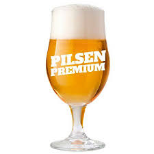
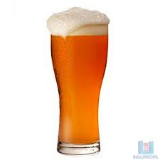
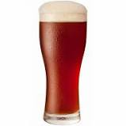
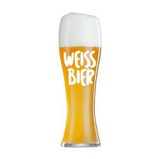
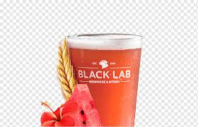

| Pilsen | Lager | Bock | Weiss | Fruit Lambic | |
|---|---|---|---|---|---|
| Origem | Bohemia - Rep. Tcheca | Viena - Austria | EinBeck - Alemanha | Baviera - Alemanha | Vale do Rio Senne - Bélgica |
| Característica | Lúpulo acentuado no aroma e sabor | Corpo médio e um sabor suave e adocicado de malte levemente tostado que se equilibra com o amargor do lúpulo. | Robustas, maior presença de malte. | Aromas e sabores frutados de banana, maça e de especiarias, como cravo e florais. | Conta com adição de frutas. |
| Cor | Dourada brilhante | Vermelho claro | Escura | Clara e opaca | Variada |
| Foto |  |  |  |  |  |